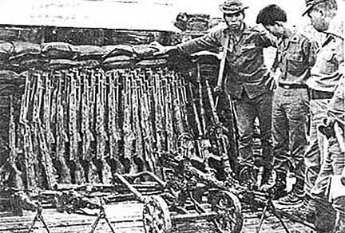
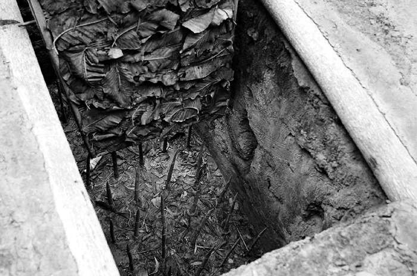

Insurgents carried out bombings of hotels and cafes in Saigon and other cities. Many of these locations were frequented by foreigners and several Americans were injured during these attacks. Newspapers in Saigon began referring to the insurgents as the Viet Cong.

Guns Supplied by Russia, China and N. Vietnam

One of many the many traps used by the Vietcong